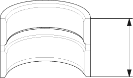
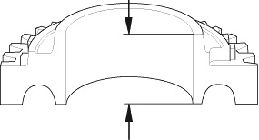
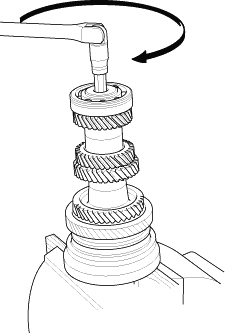
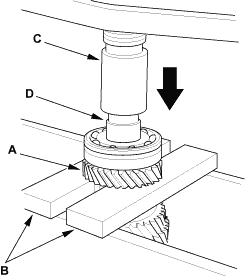

- Measure the thickness of the distance collar.
- If the thickness is less than the standard, replace the distance collar with a new one.
- If the thickness is within the standard, go to step 6.
Standard:
28.03 - 28.08 mm (1.104 - 1.106 in.)

- Measure the thickness of the 2nd gear.
- If the thickness of 2nd gear is less than the service limit, replace 2nd gear with new one.
- If the thickness of 1st gear is within the service limit, replace the 1st/2nd synchro hub with a new one.
Standard:
27.92 - 27.97 mm (1.099 - 1.101 in.)
Service Limit:
27.87 mm (1.097 in.)


- Securely clamp the countershaft assembly in a bench vice with wood blocks.

- Remove the special bolt (left-hand threads).
- Support 6th gear (A) on steel blocks (B), then use a press (C) and an attachment (D) to press the countershaft out of the ball bearing.
